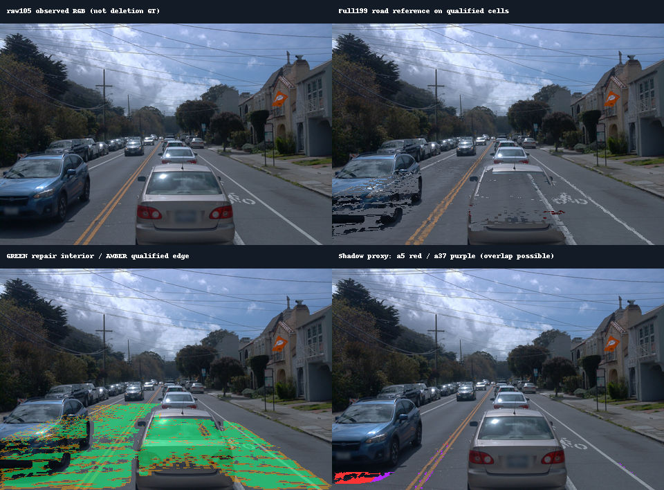

scene-008 · a5 / a37 阴影去除实验单
2026-11-03 · 从 v41 B 30k 出发 · 只做已见收益的道路恢复路线
用户已开启 GPU 并授权直接跑正式 1,000 步。按最新指示跳过 smoke 与恢复重放，总优化预算为 1,000 步。实时结果和完成状态以本目录的结果报告为准。
本次实现边界

保留原 B 静态分支的当前时间求值。新增局部 3D 道路修复分支只学习道路颜色与 opacity，其位置、形状和颜色状态不随时间切换；不添加独立阴影层。
局部修复渲染中，用新道路替换有实测支撑位置的薄道路表达；高于道路的原静态前景仍参加深度排序。只在合格道路内部使用该结果，范围外精确返回 B(t)。原 B 的四份 30k 权重只读。
输入与身份
仍删除五车：a5、a26、a18、a6、a37。主要评价 a5 与 a37。已核验 B 实际训练输入中的五个原始 track ID；删除沿用 B 原生 all_dynamic 口径。
| 沟通代号 | 原资产索引 | Waymo track ID |
|---|
| a5 | 0 | 3S_GJHyCGGK4ypFPVKOOqA |
| a26 | 1 | mSiVqee7l7dfkt8HQhXZZw |
| a18 | 2 | Umybpe6eOenVBgQ_zgdVtw |
| a6 | 3 | 7MxwK9zTRZ9g5lc_ZC0z6A |
| a37 | 4 | vBOasuXpjI7h7d-X_VEQdA |
道路证据使用 raw0–198 全部 199 帧。原 B 的有效编辑时间范围保持 raw89–137，共 49 帧；扩充道路证据不会被表述成扩充了 B 的动态时间支持。
199 帧道路证据已重建
输入预览发现旧网格未覆盖 a5 近端阴影，因此已从原始缓存实测回波扩展近端查询范围，并使用旧局部修复方案的 8cm 网格。新查询共 45,769 个单元；保留三角几何核验、遮挡检查、至少三份颜色一致观测和至少六帧时间跨度。
| 目标 | 合格 / 范围内道路单元 | 提供干净证据的帧数* | raw105 阴影代理像素 | raw105 道路修复域像素 |
|---|
| a5 | 13335 / 28513 | 179 | 852 | 7436 |
| a37 | 8845 / 13478 | 161 | 248 | 11476 |
raw105 合格阴影代理中，a5 的 852 个像素有 753 个落在修复域；a37 的 248 个有 207 个落在修复域。这里只核对输入覆盖，实际去影收益由 GPU 渲染验证。逐帧覆盖分母
* 两车均搜索全部 199 帧，可用帧数由真实可见性决定。道路参考和阴影区域是可审计代理标签；没有可靠参考的区域保持未知并单列。两车道路范围可能重叠。

这是输入证据预览，尚未执行编辑。绿色为可使用的道路内部，黄色为合格边缘；下右图显示分车阴影评价代理。
运行队列与预算
| 阶段 | 实际工作 | 更新记账 |
|---|
| 原模型基线 | 原 B 删五车；记录两处阴影与完整 49 帧。另保存零步道路初始化结果。 | 0 |
| GPU smoke | 按用户最新明确要求取消；正式过程保留 finite loss/gradient 和显存检查。 | 0 |
| 恢复重放 | 不追加训练步；最终评价独立进程读取保存的 checkpoint。 | 0 |
| 正式单一方案 | 从初始道路分支直接训练；均匀采样 49 个原 B 相机，使用完整199帧参考。 | 1000，全部训练预算 |
| 完整验收 | 49帧删车对比、两处阴影裁切与视频、逐车指标和最坏帧；输入/源权重 hash 复核。 | 0 |
只训练道路 DC/opacity，学习率分别为 0.0025 / 0.05，seed=0。损失为合格道路线性 RGB L1、实际道路贡献不足项及轻量颜色/opacity 锚定。没有重新训练原 B，没有忽略阴影监督、投影阴影或放开道路时间自由度的额外消融。
正式更新、耗时和 NVML/CUDA 显存峰单独记录，未额外训练 smoke。旧实验的 0.00665 用于选择路线；本次使用 v41 B 和新的双车199帧范围，需要重测基线和收益。
验收必须回答的事
- a5、a37 分别报告道路 MAE、阴影代理 MAE、暗残留比例、有效覆盖、实际道路贡献与最坏帧；同时给帧平均和像素加权平均。
- 固定相机切换原 B 时间：道路修复分支的 RGB 应保持一致，原静态分支继续使用当前时间。修复范围外与当时刻 B 的最大误差须为 0。
- 检查完整49帧的道路接缝、车道线与其他车辆，不能只凭训练误差认定去影成功。四份 B 权重 SHA256 必须保持不变。
- 质量评价失败时保留结果和失败原因；不自动增加新的研究分支。完成取回与依赖检查后再处理 GPU 资源收尾。
启动与可复查资产
远端独立目录：
/root/autodl-tmp/drivingeditor_repro/campaign/shadow_a5_a37_199_20261103
正式运行入口：
/root/autodl-tmp/envs/drivingeditor/bin/python \
/root/autodl-tmp/drivingeditor_repro/campaign/shadow_a5_a37_199_20261103/source/run_experiment.py --execute
封存实验配置与 source hash · 原权重与199帧文件预检查 · 双车证据计数 · 49帧评价域 · 启动源码包 · CPU 就绪凭据
原 B30k 四份文件指纹
| 文件 | SHA256 | 字节 |
|---|
| chkpnt | 0787e40b069775c2c83a19f215d48119fa8adb28689e2c158379739f4e1bda3e | 1,604,034,968 |
| dynamic_chkpnt | 4c5cbcced1686aae4d834000394a64ded036dadd0b0963dd4f483261ef92c607 | 807,923,678 |
| env_light_chkpnt | 417c0760f69fbbbf103ef84711f3540fa15c652ef943a887ba1dcb4ea2348328 | 226,494,608 |
| training_state | f6764f0bd39cf8fbfd297a33a3d2e51a153f21fb6da38ce1de77169ee8b6012c | 47,384 |